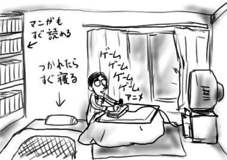
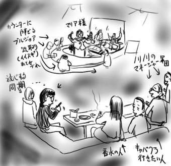

『地球防衛企業ダイ・ガード』を撮り逃しました。オレの生きる糧が(頼るな)！
というか、いぶきさんが！いぶきさんが！僕が見ない間に誰かの慰みものになっているかと思うと、オレもう！もう！(なっていません)
いぶきさんは家で両親(特に父親)と全然会話がなくてギスギスしているところが最高ラブなのですが、話が進むうちに、それは死んだ本当の父親への強度のファザコンのせいであることが明らかになります。しかし、 そんな設定は邪魔なので、単に家族と折り合いの悪い女子という尻子玉が疼くくらいの大興奮な設定へ脳内補完して楽しんでいたところ、ヒライワに「そういうの好きな！っていうか大好きな！」と言われました。その辺深刻なのでつっこまないでいただきたい。
ンダフル枠内アニメであるところの『デ・ジ・キャラット』は、放映後のワンギャル達のフォローのしようのない表情が楽しみであったわけですが、とりあえず触れないことにしているようです。
当初のオレ妄想では『ディルバート』のような、悪質な経営方針で解雇宣告や消費者対応をしまくるサラリーマン風刺に満ちた楽しい(頭が)アニメになるはずでしたが、実際は秋葉でゲームグッズショップ(まんまGAMERSですが)が舞台で、来店するおかしい(頭が)OTK達を悪質な消費者対応でひどい目に合わせるという、オタク風刺に満ちたもっと楽しい(頭が)アニメでしたので、喜んで視聴していますが、デジ子Tシャツを着用した眼鏡の横幅チャレンジャーなOTKが、グッズを「スタンプカードでお願いします」と言いながら購入したり、デジ子を汚臭く養護したりする様の本物っぷりは予想以上のすばらしさであるばかりでなく、OTKが大好きなデジ子のチャームポイントであるところの、ネコ耳や尻尾が単に縫い付けてあるだけであることがナチュラルに描写されたり(すなわち、エヴァ映画のセル反転や実写パートなどと同じ意味づけ)、応援してくれるOTKを単なるカモとしか思っていないデジ子の内面など、OTKを突き放した描写が大変痛快であるのでこの調子で突っ走って欲しいです。反面、しっかりとプチ子でOTKアピールをするなどのソツの無さです。うさだヒカルは従来のアニメ文法に乗っ取ったキャラであり、単なるかませ犬です。一部のOTKにアピール可能。
アニメ話がすぎたね。
ズンドコ速報：
未だに目が覚めると隣の部屋から同じ音楽がズンズンと響いてきて、しかも２曲目が終われば１曲目に再び戻るというエンドレス再生もそのままで、いい加減飽きないのかと本当に疑問です。壊れないかなぁ！
(10月下旬、11月上旬日記参照)
冬装備完了！こたつを出して、これで、こたつで温まりながらゲームやゲームやゲームやアニメやアニメが楽しめるばかりでなく、そのまま万年床であるところのお布団へ突入できるだけでなく、マンガもスムーズに本棚から取り出しでエロ同人もバレません。冬ってすばらしいですなぁ！

そんなわけで電気グルーヴの新曲マキシシングルです。ここしばらくのテーマであるエレクトロ構成に正しすぎるボーカルエフェクト！よくぞここまで、この肉体派！と言った感じで、来るべき2000/2/2の恐るべきアルバムへの予感(期待というよりは)だけでうち震える気分です。Flashback DiscoのKAGAMI mixは、イントロだけで大爆笑の出来ばえ。
昨日はJazzだし、今日は電気だし、音楽系サイトみたいですよね！(大間違い)
ヘルプもたまに聞こえなかったり、さらばと手を振るムードじゃなくても、誰かが懐かしがることもなくても、だからと言って、ダメじゃないさ、な。＞平岩
なんかマネージャーの人が「みんなでJazzバーに行く企画がある」というので「Jazz、いいですよね」と言っておいたら、僕も参加することになってました。というか、勢いで返事しちゃって一人で参加するのが不安な同期が僕を道連れにしようと裏で暗躍してたらしいんですけど！
そんなわけで明日朝一のミーティングの準備もそこそこに(伏線)定時で上がって参加費8000円などを徴収されながらバスに乗り込みました。
電車が人身事故で遅れている間に同期やその他の人々はホーム端の喫煙スペースへ消え、マネージャーの人とサシで電車を待つ羽目になっただけでなく、同期達は結局電車が来るまで帰って来ず、そのままサシで電車に乗り込む羽目になりました。何を話せばいいのやら、とか思いながら話を進めるうちに結局ISDNやら携帯電話やらインターネットの話題に。ホント、おれってこんなんばっかな(営業同行研修時など)。
上野で別車両にいた同期達と再び合流して地下鉄へ乗り換え。
そして、たどり着いた場所は銀座！ハイソな大人が集う古さと新しさが同居する街銀座！(想像)
ザギン(業界用語、多分)なんてはじめてよ！私酔っちゃった！(はじまってもいません)という混乱が垣間見える精神状態のまま、Jazzバー「Swing City」へ突入。
入るなり、マネージャーの人が、白いオープンなドレスにみっちりと身を包んだママに「また来ちゃった」とか挨拶をはじめ、はやくも雲行きは怪しく(伏線)。
暗い店内は暖色系のほのかな明かりで照らされ、カウンターの前(通常バーテンなどが陣取るスペース、広め)にピアノ、ウッドベース、ドラム、ビブラフォンなどが並べられており、いやがおうにも雰囲気は盛り上がる、はずもなくていきなり場違いムードです。
リッチなビール(単なるラガーの瓶なのに)や、リッチなスープ(缶詰なのに)や、リッチなサラダ(レタスと缶詰コーンだけなのに)や、リッチな料理(カレー粉まぶした唐揚げなのに)などに舌鼓を打ちつつ演奏がはじまるのを待ちます。
盛大な拍手で迎えられた演奏者達がプレイを開始。
転調！変調！様々なテクニックに裏打ちされたドラミングが変幻自在に荒れ狂い、狂気を携えたピアノが疾走！ウッドベースが狂ったループ旋律を奏で、その全てが混沌とユニゾンを繰り返しながら店内をうねりまくる！
はずもなくて、和やかなムードでロマンティックなオールドジャズやボサノヴァやクリスマスソングなどが演奏されました。星に願いをとか。僕としましても『Blow up!』by 細野不二彦 小学館ビッグコミックス知識を総動員して(ダメ)これに対抗しようとするも、もちろん知っている曲は皆無に等しく！
途中からボーカルのマリア(通称:マリア様)が登場！英語で店内の人達に挨拶！僕らの方を見て
「おや、ピクニック？引率者はどなた？(マネージャーが挙手)OK！楽しんでくだい」(意訳)
ピクニックは僕ら(オレ＋同期)を見ての感想ですか！
マリア様の歌声とトークは大変楽しく、そのエンターテナーぶりをいかんなく発揮(実は日本語がベラベラだったり、リクエストペーパーと領収書を間違えたり、「〜lover(曲名)。ワタシには7人いますが」とネクストナンバーの紹介を行う、など)し、僕も愉快な気分になってきた。
休憩を挟んで第3ステージまであり、最後にはマリア様は僕ら一人一人とがっちり握手をして
「See you next year!」(今回のメンバーが次にステージに上がるのは1月らしいです)
「No! See you next MILLENNIUM!」
などの小粋なジョークも飛び出しますよ！
ステージの合間には会社の人達との心温まる交流も(とある女性の「男の香水はsexy。今の職場に御洒落な人は皆無」発言と共に香水のサンプルの匂いを嗅ぐ羽目になるも単に臭いだけで嗅ぎ分けられなかったり、「岩槻なんて田舎に閉じこもってるだけじゃなくて毎週東京に出て情報に触れろ」命令や、「俺も若いころは日が変わる頃にタクシーで帰っていた」発言(バブル発想)や、「オンライントレードに夢中」発言や、「今度はこんなところじゃなくてギャバレーはしごしようぜ？」という完全に参加意欲を失った発言など、様々なトークが雨霰とボクに)あり、大変有意義な時間を過ごさせてもらったりした。
会話がつらいので食べ物を食べているふりをしておきました。
第3ステージが終わって楽しかったひとときも終わりとなり、外に出ると雨が！バー内の雲行きだけでなく、現実の雲行きもあやしく！(伏線回収)
岩槻まで戻ってきた時はすでに日付が変わっており、なおかつ岩槻たくなる号(自転車)を会社に置きっぱなしにしてたことに気づいて呆然となりつつ歩いて帰ったのです。
そして、翌朝、朝一で出社してみるとメールが舞い込んでおり、ミーティングは午後に変更になってました(伏線回収)
